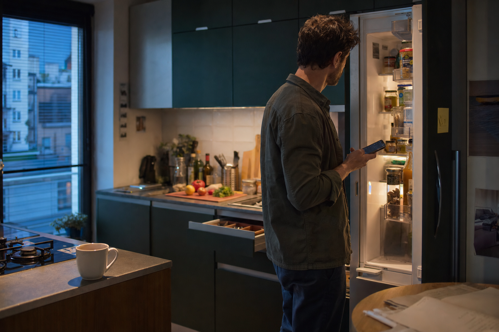
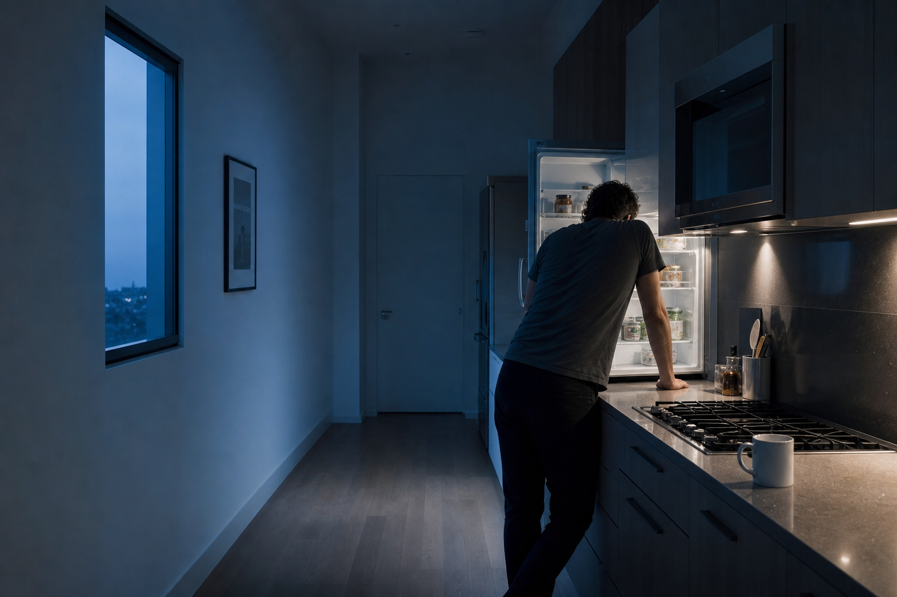
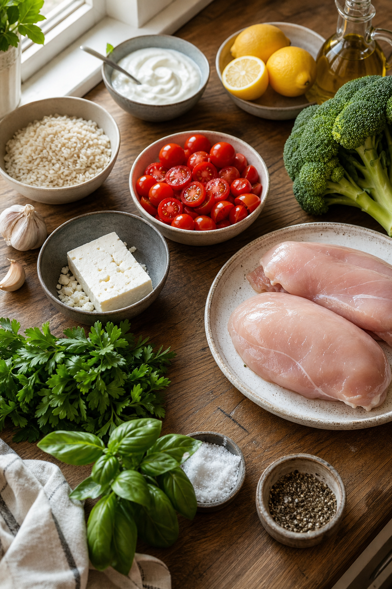
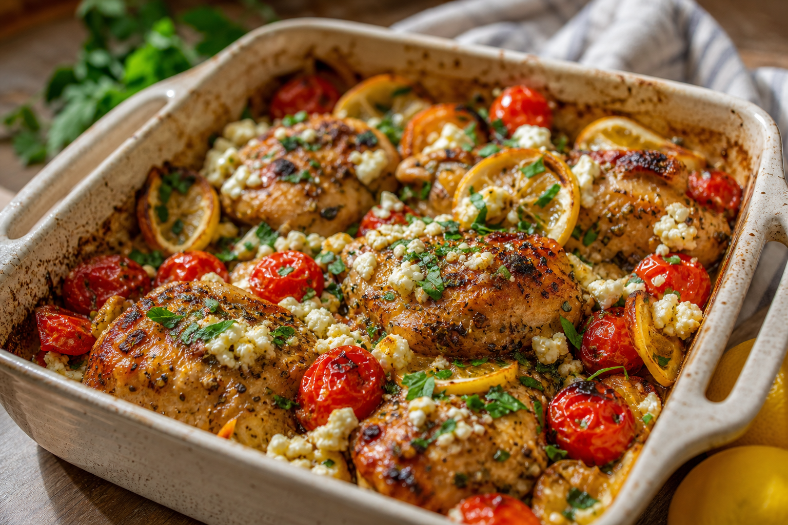
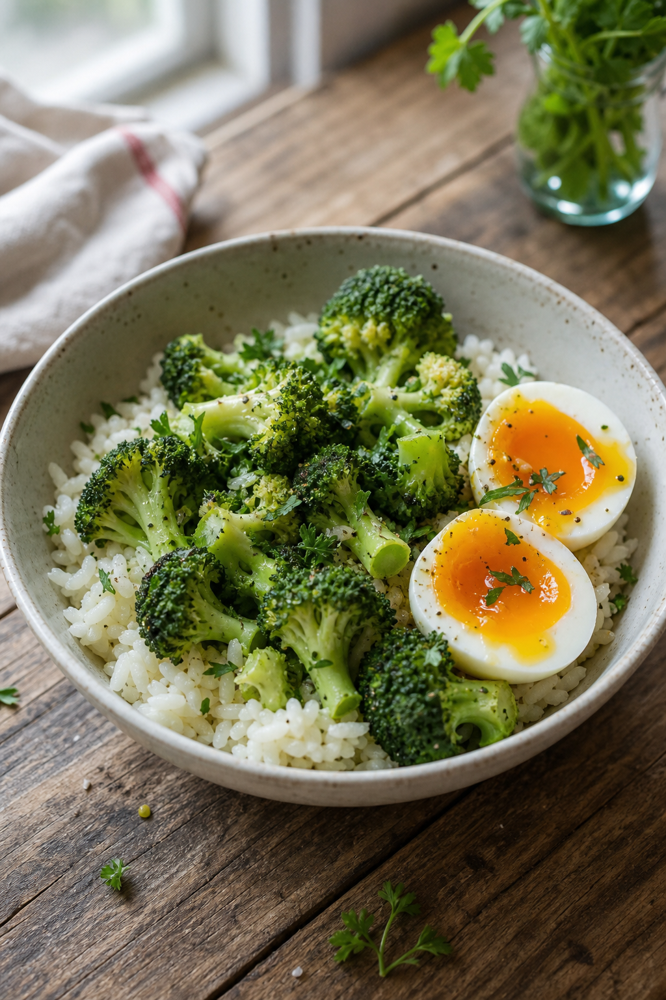
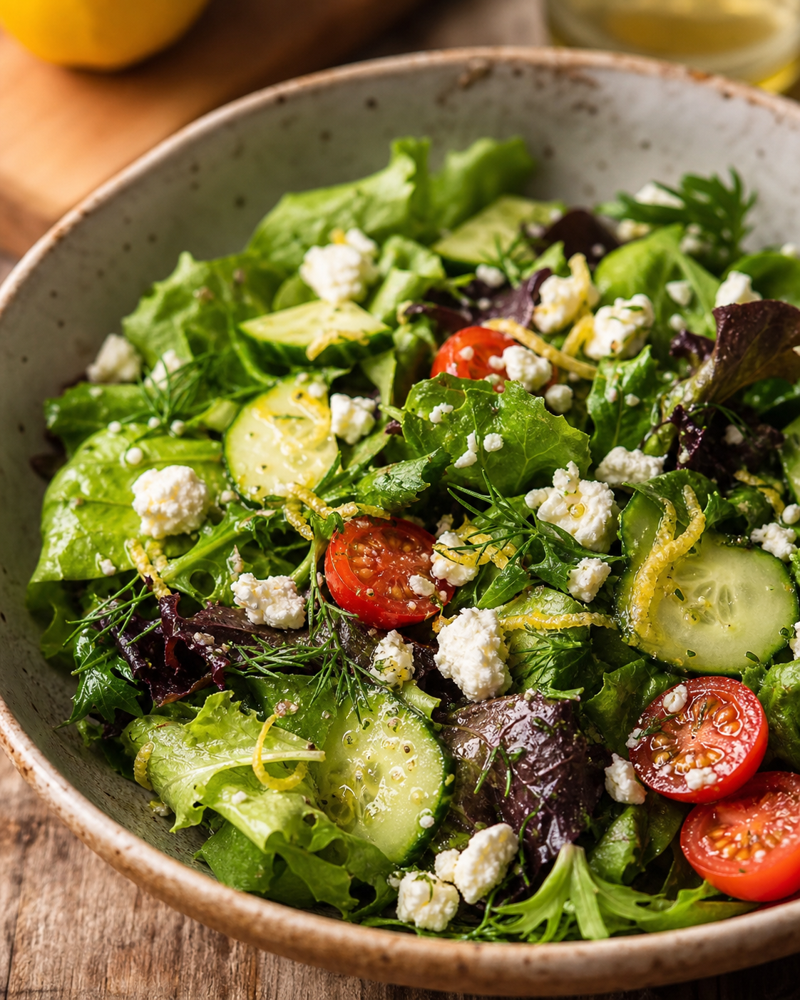
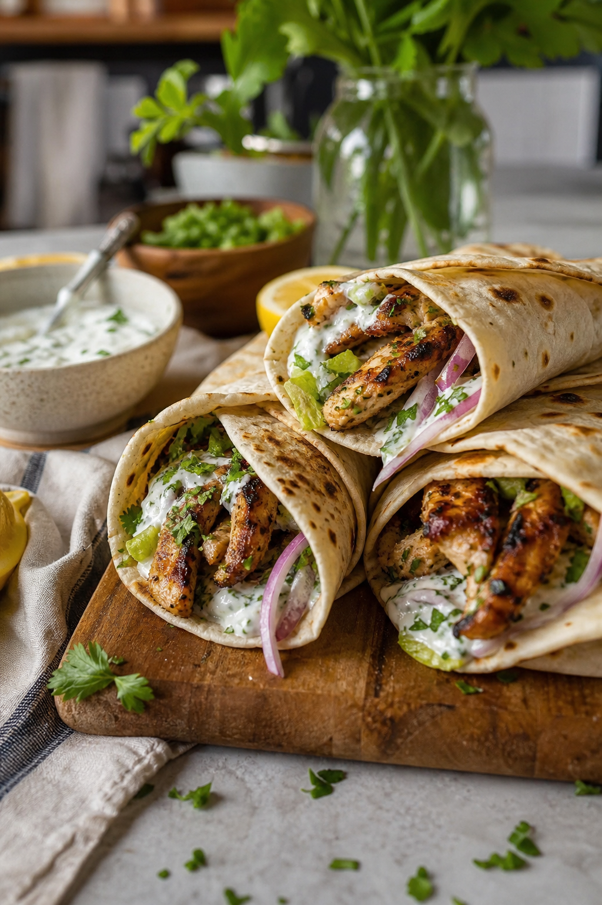
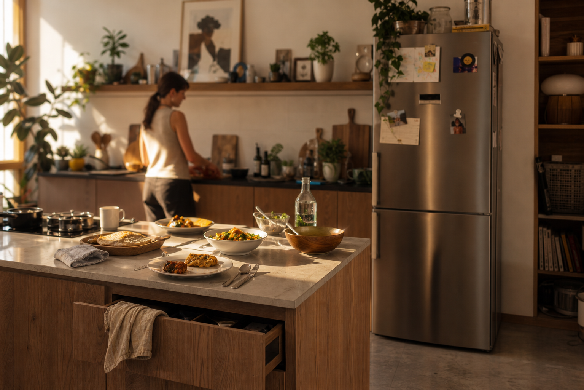

Cooking shouldn't feel like a decision every day.
See yourself in itOr scroll down to discover how UMAVI turns a pantry into dinner decisions.
You don't lack recipes.
You lack mental space at 7pm.
You're not choosing food.
You're managing energy, time and expectation.
Same decision. Every single day.
Half-used ingredients. Recipe tabs you never finish reading. A plan that quietly falls apart by 6pm.
Same life. Different point in the week.

Week rhythm: 1/4 states experienced
UMAVI recognises how you actually cook.
Patterns in your habits, ingredients, and time across a real week — your cooking rhythm, not random suggestions.
- Not who you are. Just what consistently works for you.
- Noticed over time, never assumed on day one.
From what's actually there tonight to what's for dinner.
Not an explanation. The same three-step shift that happens every time you open UMAVI — pantry, understanding, decision — laid out so you can see it all at once.

UMAVI is scanning ingredients…
From thousands of compatible possibilities to the four that make the most sense tonight.
The 4 best matches for tonight
These are tonight's best options.
Not aspirational plating. Not a restaurant. Just what becomes possible once decision fatigue is gone.





Weeknight dinners, with a lot less back-and-forth.
Not a feed of recipes. By the time you open it, there's already enough context to skip most of the back-and-forth — built around what's already in your kitchen, not a guess about who you are.
This is the moment dinner stops feeling like a decision.
"It feels like Spotify Discover for cooking."
"It actually fits how my week works."
"I stopped overthinking dinner."
"This is the first app that actually remembers how I live."
Be one of the first to try it.
Join the first wave of people who want dinner to feel lighter, easier to plan and less mentally expensive.